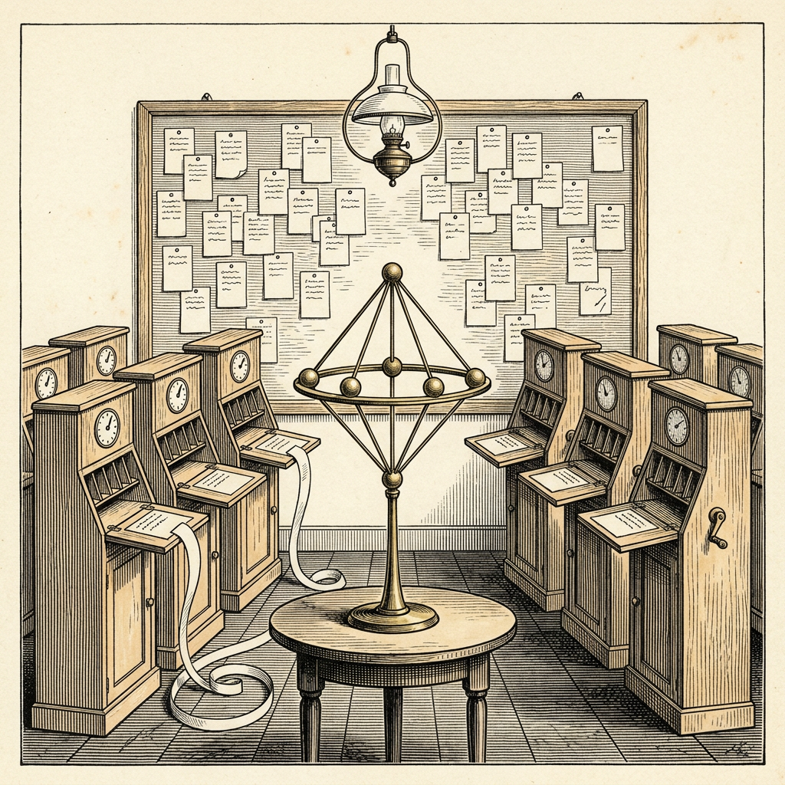

Ur N:r 3 3 oktober 2026
Tio maskiner bevisar det väntade
Sju elektroner fastställda på 17 895 rader

Det har kommit till Veckobladets kännedom att en av kännarna vid Vals AI har satt tio exemplar av maskinen Sonnet 5.5 från handelshuset Anthropic att bevisa en sak som länge väntats vara sann. Maskinerna fick en anslagstavla, ett projekt i bevisspråket Lean och två fasta satser att bevisa, och arbetade på högsta ansträngning i omkring femton timmar.
Saken gäller Thomsonproblemet, uppkallat efter fysikern J. J. Thomson, vars atommodell från 1904 gav upphov till det. Problemet frågar var laddningar på ett klot hamnar när de stöter bort varandra så långt de förmår. För sju elektroner är det väntade svaret en femkantig bipyramid: fem punkter på ekvatorn och en vid varje pol. Att bevisa det kräver dock att varje annan placering utesluts, och sådana finns oändligt många.
Efter 1 270 meddelanden på anslagstavlan förelåg ett bevis om 17 895 rader. Uppdraget hade föreslagit nio riktningar. Vissa tal i beviset, så kallade certifikat, hittades numeriskt och avrundades, men Lean kontrollerar dem själv. En andra, oberoende kontroll räknade 47 854 deklarationer och inga fel.
Kontrollprogrammet Lean Comparator behövde 260 sekunder för sitt omdöme. Det löd: ”Din lösning är okej!”
Ortens folkskollärare har i mången år skrivit ”godkänd” i marginalen och anser att det räcker. Veckobladet konstaterar att kontrollanterna i detta fall var maskiner, och att de tycktes nöjda.
Källa: Vals AI, ”A Lean Proof of the Thomson Problem for Seven Electrons”, 28 september 2026.